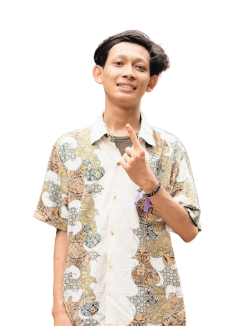

Itba' Muhammad Kamil
Mahasiswa FIB UI yang siap membawa perubahan melalui visi, misi, dan nilai yang kuat.
Saya berkomitmen untuk mewujudkan transparansi, inklusivitas, dan kesejahteraan mahasiswa FIB UI melalui kebijakan yang responsif dan program kerja yang berdampak.
Visi
Membangun sinergitas bermakna antara DPM UI, IKM FIB, dan IKM UI melalui peran representatif proaktif untuk mewujudkan keberdampakan nyata bagi IKM FIB dan IKM UI.
Misi
- Mengoptimalkan kembali peran legislatif sebagai representatif IKM dalam mewadahi setiap aspirasi dan kebutuhan IKM
- Mendorong tertanamnya sistem Good Corporate Governance demi mewujudkan sistem kerja yang efektif dan optimal
- Menciptakan sinergitas antara DPM UI, IKM UI, dan IKM FIB
- Mendorong terciptanya kebijakan yang relevan dan berdampak nyata bagi IKM FIB dan UI
- Menciptakan inklusivitas representatif dengan orientasi proaktif
- Menyediakan informasi yang jelas, transparan, dan aksesibel
Nilai
Sinergitas, Representatif, Berdampak
Unduh Grand Design saya terlebih dahulu untuk memahami lebih lanjut visi dan misi saya!
Download Rancangan Besar